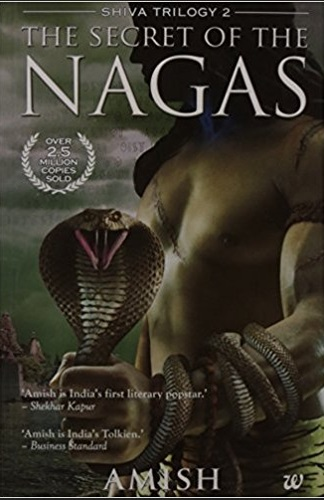
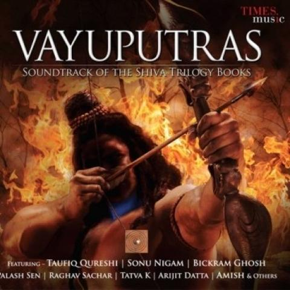
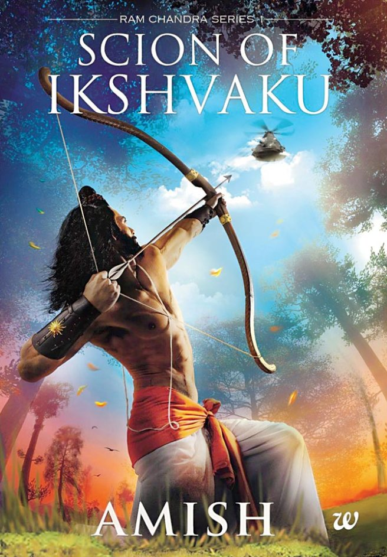
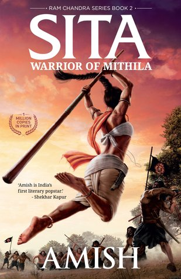

The Immortals of Meluha is the first novel of the Shiva trilogy series by Amish Tripathi. The story is set in the land of Meluha and starts with the arrival of the Shiva. The Meluhans believe that Shiva is their fabled saviour Neelkanth. Shiva decides to help the Meluhans in their war against the Chandravanshis, who had joined forces with a cursed Nagas; however, during his journey and the fight that ensues, Shiva learns how his choices actually reflect who he aspires to be and how they lead to dire consequences.
 The Secret of the Nagas is the second novel of the Shiva trilogy series by the Indian author Amish Tripathi. The story takes place in the imaginary land of Meluha and narrates how the inhabitants of that land are saved from their wars by a nomad named Shiva. It begins from where its predecessor, The Immortals of Meluha, left off, with Shiva trying to save Sati from the invading Naga. Later Shiva takes his troop of soldiers and travels far east to the land of Branga, where he wishes to find a clue to reach the Naga people. Shiva also learns that Sati's first child is still alive, as well as her twin sister. His journey ultimately leads him to the Naga capital of Panchavati, where he finds a surprise waiting for him.
 The Oath of the Vayuputras is a 2013 novel by Indian author Amish Tripathi and the final book in his Shiva trilogy. The book was released on 27 February 2013, through Westland Press and completes the mythical story about an imaginary land Meluha and how its inhabitants were saved by a nomad named Shiva. Starting from where the previous installment left off, Shiva discovers that Somras is the true evil in The Oath of the Vayuputras. Shiva then declares a holy war on those who seek to continue to use it, mainly the Emperors Daksha and Dilipa, who are being controlled by the sage Bhrigu. The battle rages on and Shiva travels to the land of Pariha to consult with Vayuputras, a legendary tribe. By the time he returns, the war has ended with Sati, his wife, being murdered. An enraged Shiva destroys the capital of Meluha and Somras is wiped out of history. The story concludes with Shiva and his associates being popularized as Gods for their deeds and accomplishments.
 Scion of Ikshvaku (also known as Ram: Scion of Ikshvaku) is a fantasy book by Indian author Amish Tripathi, released on 22 June 2015. It is based on Ram, the legendary Indian king regarded as an incarnation of Vishnu. The title was revealed by the author at the Jaipur Literature Festival. The story begins with King Dashrath of Ayodhya being defeated in a war by Lankan trader Raavan, and the birth of his son Ram. It follows through Ram's childhood and tutelage, along with the politics surrounding his ascension to the throne, and ultimately his 14-year exile, accompanied by wife Sita and brother Lakshman.
 Sita: Warrior of Mithila is a fantasy book by Indian author Amish Tripathi which was released on 29 May 2017. This is the second book of the Ram Chandra Series of Amish Tripathi. Ram Chandra Series is a retelling of the most famous epic of India, the Ramayana. Each book, in this series focus on one important character of the Ramayana. Sita: Warrior of Mithila, as is clear from its title, focuses on the story of Sita.